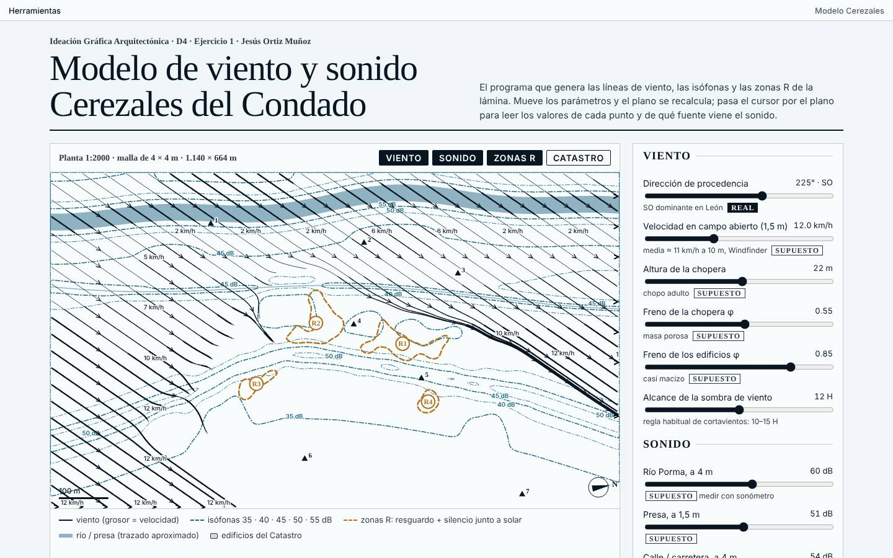
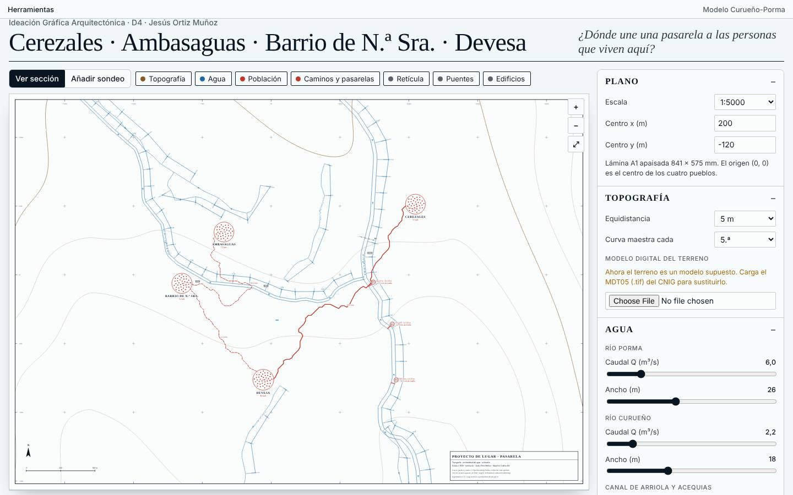
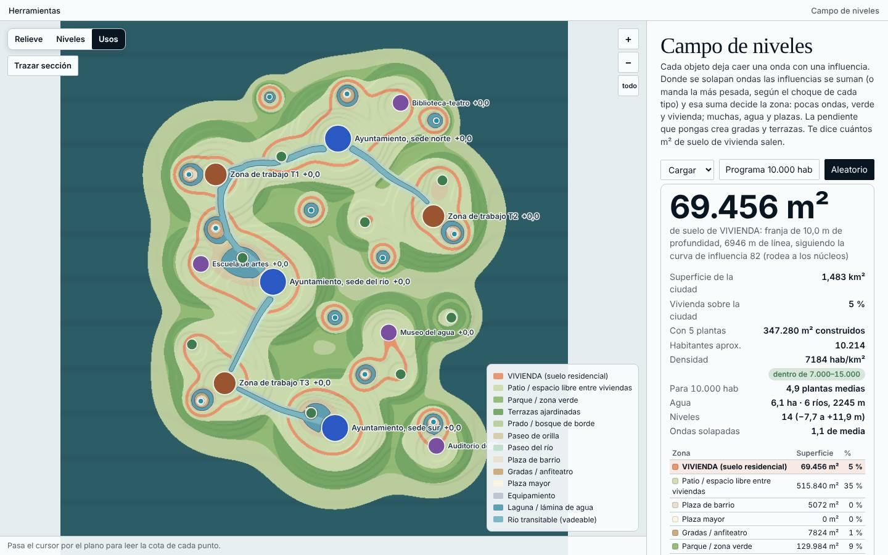
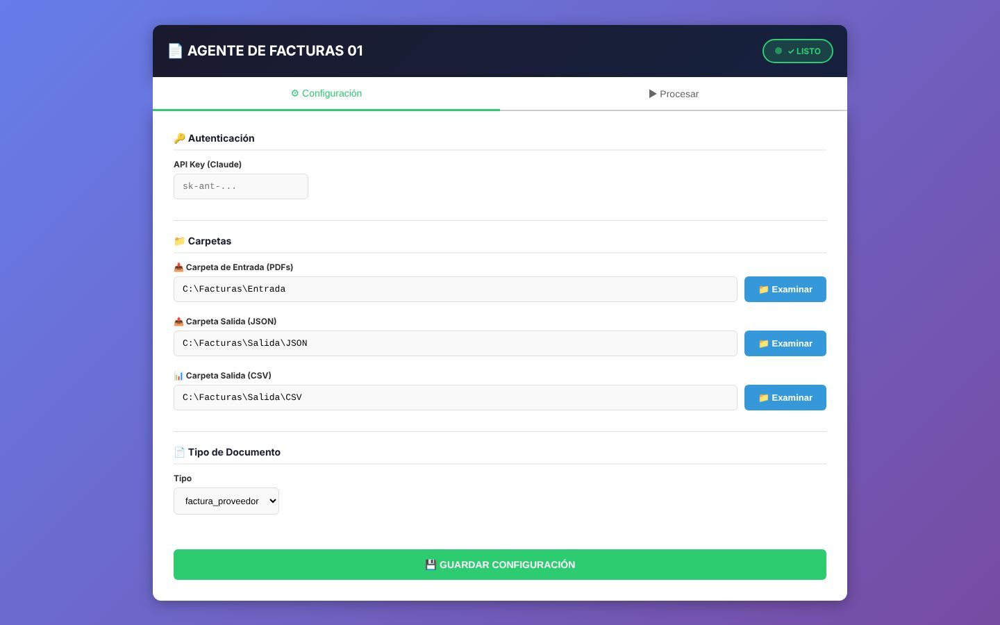
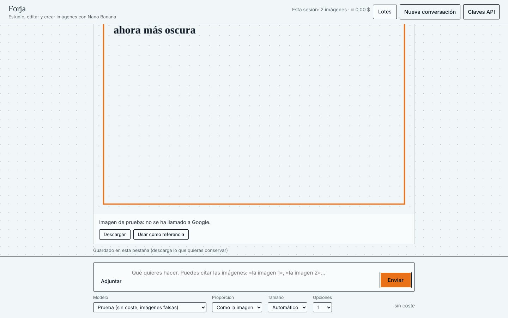

Forja
Imágenes con IA por lotes: una plantilla se multiplica en la matriz de prompts
App local, IAAbrir herramienta
Programas que he escrito para dibujar, medir y automatizar. Los ocho primeros se abren aquí; siete funcionan en el navegador y el agente de facturas es una vista previa de su interfaz.
Imágenes con IA por lotes: una plantilla se multiplica en la matriz de prompts
App local, IAAbrir herramientaMaqueta A1 a 1:1500 del frente fluvial: ecos, pasarela y exportación a DXF
Taller 7Abrir herramienta
Viento, sonido y zonas de resguardo de Cerezales del Condado, con mediciones
Dibujo 4Abrir herramienta
Pasarela entre cuatro pueblos: topografía, agua, población y sección
Dibujo 4Abrir herramienta
Cada piedra abre ondas; donde se cruzan manda la de más peso
Proyectos 9Abrir herramienta
Ondas, cotas y usos de la Ciudad Acuática, con superficie de vivienda
Proyectos 9Abrir herramienta
Captura, archivo y registro de facturas de obra; esta es la vista previa de su interfaz
Python, IAAbrir herramienta
La app real de Forja en el navegador: lotes de imágenes y conversación con Nano Banana, con tu propia clave de API
Clave propiaAbrir herramienta
| ArquiViz | Add-on de Blender: del 3D de AutoCAD al render | Blender · Python |
|---|---|---|
| Visualizadores 3D | Modelos de arquitectura (STL, OBJ, SketchUp) con materiales y cámara interactivos | Three.js |
| PDF a BC3 | Presupuestos en PDF convertidos a BC3 para Presto | Presto · IA |